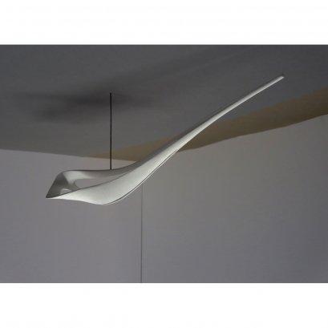

WORKS
Public
» Tokyo 2015
Berlin 2015
ANA 2010
@aroma 2010
Hangzhou 2009
Singapore 2008
Tokyo University 2008
Kita Kyushu 2006
Osaki 2006
Panasonic 2003
Private
ABOUT
CONTACT

1 2 3 4
entrance hall, residential building, Tokyo
concept, 2015 (realisation 2018)
© Copyright 2019 English | 日本語
Site by Yosh